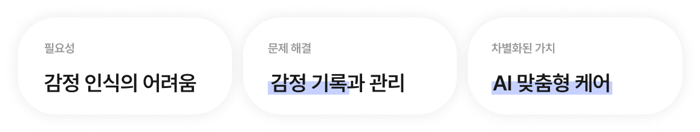
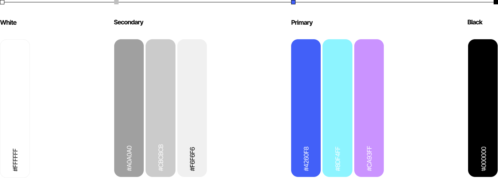
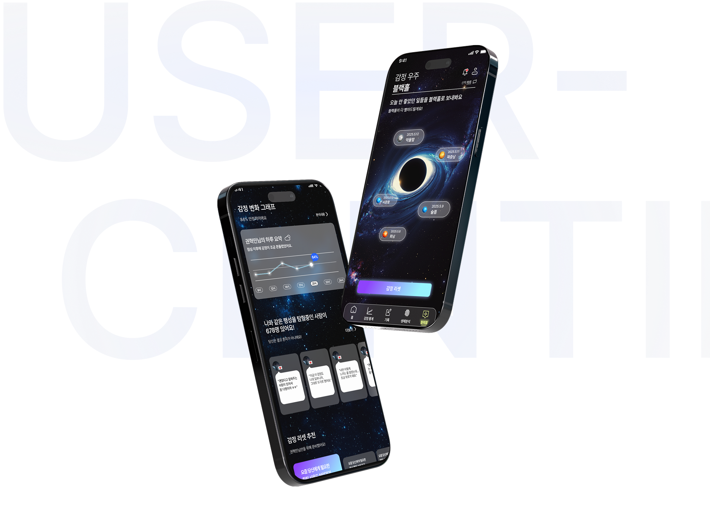
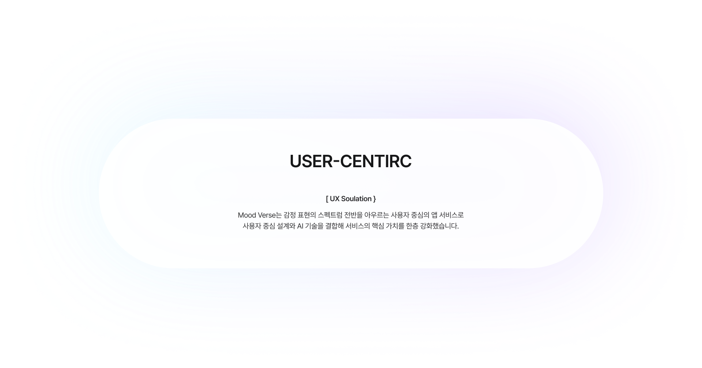
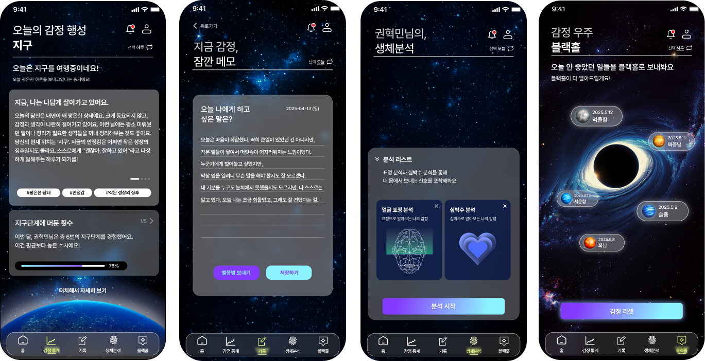

전 세계적으로 약 2억 8천만 명이 우울증을 겪고 있어
감정 케어와 정신 건강 관리의
중요성이 커지고 있습니다.
특히 정신 건강 앱 시장은 스마트폰 보급과 디지털 플랫폼
확산에 힘입어 빠르게 성장 중입니다. 명상, 기분 추적, 상담 등
다양한 기능을 통해
일상 속 정신 건강 관리를 돕는 서비스들이
주목받고 있습니다.
일상 속 감정과 스트레스를 관리할 수 있도록 이 서비스는 감정을
자유롭게 표현하고 정리할 수 있는 개인 공간을 제공합니다.
감정 변화 트래킹과
AI 분석을 통해 사용자의 감정 흐름을
시각화하고 정밀하게 파악한 뒤 맞춤형 피드백과 케어 콘텐츠를
제공해 자기 이해와 정서적 회복을 돕습니다.



사람마다 감정을 표현하거나 해소하는 방식은 다양하며 감정을
숨기거나 대화·일기·운동 등
으로 드러내는 방식이 존재합니다. 최근에는 감정 기록 앱이나 AI 케어
도구처럼 자기 돌봄의
방식도 점차 확장되고 있습니다. 우리의 서비스는
이 다양한 감정 표현의 스펙트럼을 포용하며
누구나 자신에게 맞는
방식을 찾고 실천할 수 있도록 돕습니다.







감정 우주를 기반으로 한 서비스 구조 수립
MOODVERSE는 사용자가 자신의 감정을 자연스럽게 탐색할 수 있도록 전체
구조를 설계했습니다. 기록에서 시작해 분석과 확장으로 이어지는 감정의
흐름을
단계별로 경험할 수 있도록 구성했으며 각 기능은 감정의 상태를
시각적으로 표현
하여 사용자의 몰입감을 높일 수 있도록 구성했습니다.


하루의 감정이 모여, 나만의 우주가 된다.
[ Service Planner ]
[ UX ]
[ UI ]
[ Developer ]
권혁민 길정준 양채윤
권혁민 길정준 양채윤
권혁민 길정준
양채윤